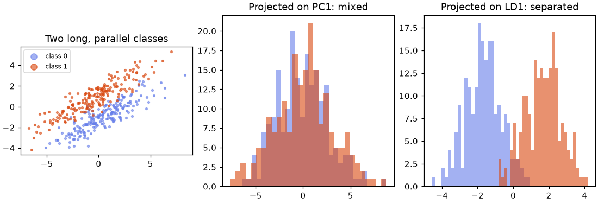
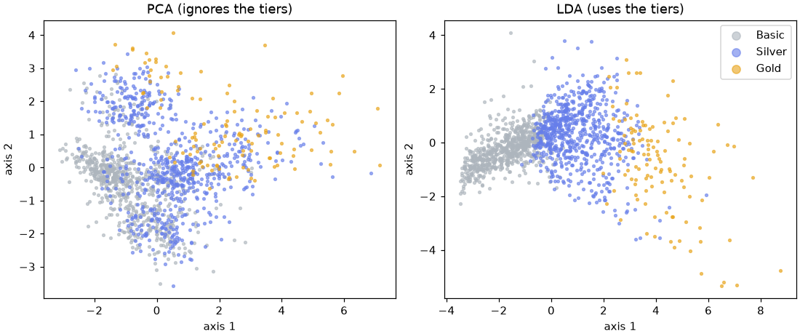

🧲 Lesson 9.2: Linear Discriminant Analysis
Let the labels choose the angle: find the few directions that pull classes apart, and get a fast, honest linear classifier from the same model.
🎯 Learning Objectives
By the end of this lesson, you will be able to:
- Explain how LDA differs from PCA: it maximizes the separation between classes relative to the spread within them
- Predict how many discriminant components LDA can produce (classes minus one) and read
explained_variance_ratio_andscalings_ - Use
LinearDiscriminantAnalysisas a classifier and compare it with a baseline, logistic regression and QDA - Use shrinkage when there are many features and few rows
- Keep a supervised reducer inside a
Pipeline, and show how badly it overfits when you do not
In This Lesson
📸 Let the Labels Choose the Angle
In Lesson 9.1, PCA drew Pinecrest's customers on the two directions of greatest spread, and the churners were smeared across the picture. That was not a bug: PCA never saw the churned column, so it had no reason to look for the direction that separates churners. Linear discriminant analysis (LDA) is the supervised counterpart. It also finds straight-line directions, but it uses the labels to pick the ones along which the classes are easiest to tell apart.
💡 Mental Model: The Team Photo
Two hiking clubs pose on a field and you photograph them from the side, so the picture flattens everyone onto one line. PCA picks the camera angle that makes the crowd look as wide as possible, even if both clubs end up mixed together. LDA walks around the field until the two clubs appear as two tight, separate groups: each club bunched up, the clubs far apart. Same flattening, different goal.
That goal has a precise form. For a direction w, project every row onto it and compute two numbers: how far apart the class means are (between-class spread) and how spread out each class is around its own mean (within-class spread). LDA maximizes their ratio:
🔑 Fisher's Criterion
J(w) = (spread of the class means along w) / (spread within the classes along w) = wT SB w / wT SW w, where SB and SW are the between-class and within-class scatter matrices. Big means far apart, small means tightly bunched. The best directions are eigenvectors of SW-1 SB.
One consequence is worth memorizing now. The class means of C classes span at most C - 1 directions (two points define a line, three a plane), so LDA can produce at most C - 1 components, however many features you have. Two classes give one axis; three tiers give two.
🤔 Why This Matters
LDA earns its place twice. As a reducer, it gives the most class-separating low-dimensional picture a linear method can, which is ideal for plots and as a compact input to other models. As a classifier, it is fast, has almost nothing to tune, and is often as accurate as logistic regression. Its supervised nature also makes it the clearest example of a trap that affects every supervised preprocessing step: fit it outside cross-validation and it will happily "separate" pure noise.
🔀 PCA versus LDA on One Picture
Make two classes that are long, thin and parallel: they spread a lot along one direction but are separated along another. The seed keeps the random numbers identical to the page.
import numpy as np
import pandas as pd
import matplotlib.pyplot as plt
from sklearn.decomposition import PCA
from sklearn.discriminant_analysis import LinearDiscriminantAnalysis
rng = np.random.default_rng(42)
n = 200
along = rng.normal(0, 3, 2 * n) # long direction, same for both classes
across = rng.normal(0, 0.6, 2 * n) + np.repeat([-1.0, 1.0], n) # short direction, classes apart
angle = np.deg2rad(30)
rotation = np.array([[np.cos(angle), -np.sin(angle)], [np.sin(angle), np.cos(angle)]])
toy_X = np.column_stack([along, across]) @ rotation.T
toy_y = np.repeat([0, 1], n)
toy_pca = PCA(n_components=1).fit(toy_X)
toy_lda = LinearDiscriminantAnalysis(n_components=1).fit(toy_X, toy_y)
lda_dir = toy_lda.scalings_[:, 0] / np.linalg.norm(toy_lda.scalings_[:, 0])
print("PCA direction:", toy_pca.components_[0].round(3))
print("LDA direction:", lda_dir.round(3))Output
PCA direction: [0.866 0.5 ]
LDA direction: [-0.489 0.872]The two directions are almost at right angles. PCA follows the long axis, because that is where the spread is. LDA points across the classes. Project the rows onto each direction and see what each one keeps:
def separation(z, labels):
"""Distance between the two class means, in units of the average within-class std."""
a, b = z[labels == 0], z[labels == 1]
return abs(a.mean() - b.mean()) / np.sqrt((a.var() + b.var()) / 2)
on_pc1 = toy_pca.transform(toy_X)[:, 0]
on_ld1 = toy_lda.transform(toy_X)[:, 0]
print(f"separation on PC1: {separation(on_pc1, toy_y):.2f}")
print(f"separation on LD1: {separation(on_ld1, toy_y):.2f}")
fig, axes = plt.subplots(1, 3, figsize=(10, 3.4), layout="constrained")
for cls, color in [(0, "#667eea"), (1, "#d9480f")]:
axes[0].scatter(*toy_X[toy_y == cls].T, s=6, alpha=0.6, color=color, label=f"class {cls}")
axes[1].hist(on_pc1[toy_y == cls], bins=30, alpha=0.6, color=color, label=f"class {cls}")
axes[2].hist(on_ld1[toy_y == cls], bins=30, alpha=0.6, color=color, label=f"class {cls}")
axes[0].set_aspect("equal")
axes[0].set_title("Two long, parallel classes")
axes[1].set_title("Projected on PC1: mixed")
axes[2].set_title("Projected on LD1: separated")
axes[0].legend(markerscale=3, fontsize=8)
plt.show()Output
separation on PC1: 0.05
separation on LD1: 3.32
On PC1 the class means are essentially on top of each other. On LD1 they are more than three within-class standard deviations apart. This is the whole difference between the two methods in one picture: PCA preserves spread, LDA preserves separability.
📉 One Axis for Churn
Back to Pinecrest. Load the churn table, take the ten numeric features, split as usual and scale. (LDA's predictions do not change with scaling, but scaled inputs make its weights comparable across features, as with logistic regression in Lesson 1.1.)
from sklearn.model_selection import train_test_split
from sklearn.preprocessing import StandardScaler
pd.set_option("display.width", 150)
customers = pd.read_csv("data/customers_churn.csv")
features = ["tenure_months", "orders_12m", "spend_12m", "avg_order_value", "days_since_last_order",
"returns_12m", "return_rate", "support_tickets_12m", "discount_share", "app_user"]
X = customers[features]
y = customers["churned"]
X_train, X_test, y_train, y_test = train_test_split(X, y, test_size=0.25, stratify=y, random_state=42)
scaler = StandardScaler().set_output(transform="pandas")
X_train_s = scaler.fit_transform(X_train)
X_test_s = scaler.transform(X_test)
lda = LinearDiscriminantAnalysis()
lda.fit(X_train_s, y_train)
churn_axis = lda.transform(X_test_s)
print("transformed shape:", churn_axis.shape)
print(pd.Series(lda.scalings_[:, 0], index=features).round(2).sort_values())Output
transformed shape: (1500, 1)
app_user -0.21
tenure_months -0.09
orders_12m -0.08
avg_order_value -0.05
spend_12m -0.04
returns_12m -0.03
return_rate 0.01
support_tickets_12m 0.30
discount_share 0.50
days_since_last_order 0.92
dtype: float64Ten features in, one column out: two classes give at most one discriminant. The weights in scalings_ define that axis, and they read like a churn story: days since the last order dominates, then reliance on discounts and support tickets, with app users and loyal, frequent buyers on the other side. Lesson 9.1's PCA buried days_since_last_order across several components; LDA puts it front and center because the labels told it to.
test_view = pd.DataFrame({"LD1": churn_axis[:, 0], "churned": y_test.to_numpy()})
print(test_view.groupby("churned")["LD1"].describe()[["mean", "std", "25%", "75%"]].round(2))Output
mean std 25% 75%
churned
0 -0.25 0.96 -0.97 0.33
1 1.13 1.17 0.25 2.06On test customers the model never saw, churners average more than one unit higher on the axis. The classes still overlap (compare the quartiles), because churn is genuinely hard to predict from these columns, but the single LD1 number is already a usable risk score.
🎯 LDA as a Classifier
The same fitted object predicts. LDA models each class as a bell-shaped (Gaussian) cloud, all with the same shape (one shared covariance matrix) but different centers, and assigns a new row to the class whose cloud makes it most likely, taking the class proportions (priors_) into account. Shared shape is what makes the boundary a straight line. Compare it with the baseline and with logistic regression on the same test set, using the metrics from Lesson 1.4:
from sklearn.dummy import DummyClassifier
from sklearn.linear_model import LogisticRegression
from sklearn.discriminant_analysis import QuadraticDiscriminantAnalysis
from sklearn.metrics import accuracy_score, roc_auc_score
print("class priors learned from training data:", lda.priors_.round(3))
models = {
"baseline": DummyClassifier(strategy="prior"),
"LDA": LinearDiscriminantAnalysis(),
"logistic regression": LogisticRegression(),
"QDA": QuadraticDiscriminantAnalysis(),
}
for name, model in models.items():
model.fit(X_train_s, y_train)
proba = model.predict_proba(X_test_s)[:, 1]
acc = accuracy_score(y_test, model.predict(X_test_s))
print(f"{name:20s} accuracy {acc:.3f} ROC AUC {roc_auc_score(y_test, proba):.3f}")Output
class priors learned from training data: [0.835 0.165]
baseline accuracy 0.835 ROC AUC 0.500
LDA accuracy 0.853 ROC AUC 0.824
logistic regression accuracy 0.848 ROC AUC 0.823
QDA accuracy 0.813 ROC AUC 0.803LDA and logistic regression are neck and neck: both draw one straight boundary, they just estimate it differently (LDA from class means and a shared covariance, logistic regression by directly maximizing the likelihood of the labels). Both clearly beat the baseline's AUC of 0.5.
QDA (quadratic discriminant analysis) lets every class have its own covariance shape, which makes curved boundaries possible. Here it is worse. It has many more numbers to estimate (a full covariance matrix per class), and the Gaussian assumption fits these skewed counts and fractions poorly. Flexibility is not free.
💡 Do the Assumptions Matter?
LDA's derivation assumes Gaussian classes with equal covariance. Pinecrest's columns are counts, dollar amounts and fractions: clearly not bell curves. Yet LDA matched logistic regression. That is typical: as a classifier, LDA is robust to moderate violations, because a straight boundary is often good enough. Treat the assumptions as a reason to check, not a reason to avoid it, and let a held-out score decide.
⚠️ A Risk Score Is Not a Verdict
A churn axis ranks customers for a retention offer; it does not decide who "deserves" one. If you ever use such a score to treat customers differently, check that it does not disadvantage a group unfairly (Lesson 7.3 shows how), and never use a protected attribute such as age_group as the label for LDA or any other model.
🧮 More Classes, More Axes
With more classes, LDA gives more axes, up to classes minus one, and explained_variance_ratio_ says how much of the between-class separation each axis carries. Here is a toy with four classes in ten dimensions:
from sklearn.datasets import make_blobs
blobs_X, blobs_y = make_blobs(n_samples=400, centers=4, n_features=10, cluster_std=3.0, random_state=42)
blob_lda = LinearDiscriminantAnalysis().fit(blobs_X, blobs_y)
print("classes:", blob_lda.classes_)
print("transform shape:", blob_lda.transform(blobs_X).shape)
print("separation carried by each axis:", blob_lda.explained_variance_ratio_.round(3))Output
classes: [0 1 2 3]
transform shape: (400, 3)
separation carried by each axis: [0.781 0.136 0.083]Four classes, three discriminant axes, whatever the ten features. Note what the ratio measures: the share of between-class separation, not of total variance as in PCA. If the first two axes carry nearly all of it, a two-dimensional LDA plot shows almost everything that distinguishes the classes. The project does this with Pinecrest's three loyalty tiers.
🪢 Many Features, Few Rows: Shrinkage
LDA has to estimate a covariance matrix: for 200 features, that is about 20,000 numbers. With only 100 rows the estimate is very noisy, and the classifier suffers. Shrinkage pulls the estimated covariance toward a simpler, more stable shape. With shrinkage="auto", scikit-learn picks the amount with the Ledoit-Wolf formula, so there is nothing to tune. It needs the "lsqr" or "eigen" solver.
from sklearn.datasets import make_classification
from sklearn.model_selection import cross_val_score, StratifiedKFold
wide_X, wide_y = make_classification(n_samples=100, n_features=200, n_informative=10,
n_redundant=0, random_state=42)
cv = StratifiedKFold(n_splits=5, shuffle=True, random_state=42)
for name, model in [("plain LDA (svd)", LinearDiscriminantAnalysis()),
("LDA with shrinkage", LinearDiscriminantAnalysis(solver="lsqr", shrinkage="auto"))]:
print(f"{name:20s} CV accuracy {cross_val_score(model, wide_X, wide_y, cv=cv).mean():.3f}")Output
plain LDA (svd) CV accuracy 0.540
LDA with shrinkage CV accuracy 0.680Without shrinkage, LDA on 100 rows and 200 features is close to a coin flip. With it, accuracy improves substantially. Use shrinkage whenever features are many compared with rows (text, genes, pixels with few images). One catch: the "lsqr" solver only classifies; if you also want transform, use solver="eigen" with shrinkage.
✅ Choosing a Solver
"svd" (the default): no covariance matrix, fine for many features, supports transform, no shrinkage. "lsqr": classification only, supports shrinkage. "eigen": supports both transform and shrinkage. When in doubt: default for ordinary tables, "eigen" with shrinkage="auto" for wide ones.
⚠️ Common Mistakes
1. Asking for More Axes Than Classes Allow
LinearDiscriminantAnalysis(n_components=2).fit(X_train_s, y_train)Error
ValueError: n_components cannot be larger than min(n_features, n_classes - 1).What it means: churn has two classes, so there is only one discriminant direction, whatever the number of features. Fix: n_components at most classes minus one. If you need a two-dimensional picture of a two-class problem, use LD1 plus a principal component, or the methods of Lesson 9.3.
2. Forgetting the Labels
LinearDiscriminantAnalysis().fit(X_train_s)Error
TypeError: LinearDiscriminantAnalysis.fit() missing 1 required positional argument: 'y'What it means: unlike PCA, LDA is supervised; it cannot find class-separating directions without classes. Fix: fit(X, y). If you have no labels, you want PCA (or a clustering first, then think hard about whether its labels mean anything).
3. Shrinkage with the Default Solver
LinearDiscriminantAnalysis(shrinkage="auto").fit(X_train_s, y_train)Error
NotImplementedError: shrinkage not supported with 'svd' solver.What it means: the default "svd" solver never forms a covariance matrix, so there is nothing to shrink. Fix: solver="lsqr" (classification) or solver="eigen" (classification and transform).
4. Fitting LDA Before Cross-Validation
This one raises nothing and is the most dangerous. Make data that is pure noise: 500 random features and three random labels, so no model can honestly beat one-in-three. Reduce it with LDA on all rows, then cross-validate a k-nearest-neighbors classifier on the reduced data:
from sklearn.neighbors import KNeighborsClassifier
from sklearn.pipeline import make_pipeline
noise_X = rng.normal(size=(100, 500))
noise_y = rng.integers(0, 3, size=100)
reduced = LinearDiscriminantAnalysis(n_components=2).fit_transform(noise_X, noise_y)
leaky = cross_val_score(KNeighborsClassifier(n_neighbors=5), reduced, noise_y, cv=cv).mean()
honest_pipe = make_pipeline(LinearDiscriminantAnalysis(n_components=2), KNeighborsClassifier(n_neighbors=5))
honest = cross_val_score(honest_pipe, noise_X, noise_y, cv=cv).mean()
print(f"LDA fitted on all rows, then CV: {leaky:.2f}")
print(f"LDA inside the pipeline: {honest:.2f}")
print("chance level: 0.33")Output (no error, and that is the problem)
LDA fitted on all rows, then CV: 0.62
LDA inside the pipeline: 0.34
chance level: 0.33What happened: with 500 features and 100 rows, LDA can always find directions along which the given labels happen to separate, even when the labels are random. Fitted on all rows, it used the test folds' labels to build the features, so the cross-validation scores the model on rows it has effectively memorized. Inside the pipeline, each fold fits LDA on its training part only, and the score falls back to chance, which is the truth. Fix: every supervised step (LDA, target encoding, feature selection that looks at y) belongs inside the Pipeline. PCA's version of this leak was small; a supervised reducer's is large.
🛠️ Project: The Loyalty-Tier Map
Pinecrest's marketing team wants a picture of its three loyalty tiers (Basic, Silver, Gold) and a quick way to tell which behaviors separate them. Three classes means LDA gives exactly two axes: a perfect fit for a flat map. You will build the map, read what defines each axis, compare it with PCA, and check how well the same model predicts a customer's tier. Work in a new notebook called lesson_9_2_project. Allow about 45 minutes.
🛠️ Step 1: Load and split by tier (5 min)
The target is now loyalty_tier, so stratify on it.
import numpy as np
import pandas as pd
import matplotlib.pyplot as plt
from sklearn.model_selection import train_test_split
customers = pd.read_csv("data/customers_churn.csv")
features = ["tenure_months", "orders_12m", "spend_12m", "avg_order_value", "days_since_last_order",
"returns_12m", "return_rate", "support_tickets_12m", "discount_share", "app_user"]
X = customers[features]
tier = customers["loyalty_tier"]
X_train, X_test, t_train, t_test = train_test_split(X, tier, test_size=0.25, stratify=tier, random_state=42)
print(t_train.value_counts())Output
loyalty_tier
Basic 2129
Silver 2015
Gold 356
Name: count, dtype: int64🛠️ Step 2: Baseline and an LDA pipeline (10 min)
Put the scaler and LDA in one pipeline, so the whole thing is fitted on training rows only, and compare with the most-frequent baseline and with logistic regression.
from sklearn.pipeline import make_pipeline
from sklearn.preprocessing import StandardScaler
from sklearn.discriminant_analysis import LinearDiscriminantAnalysis
from sklearn.linear_model import LogisticRegression
from sklearn.dummy import DummyClassifier
tier_lda = make_pipeline(StandardScaler(), LinearDiscriminantAnalysis())
candidates = {
"baseline": DummyClassifier(strategy="most_frequent"),
"LDA": tier_lda,
"logistic regression": make_pipeline(StandardScaler(), LogisticRegression(max_iter=1000)),
}
for name, model in candidates.items():
model.fit(X_train, t_train)
print(f"{name:20s} test accuracy {model.score(X_test, t_test):.3f}")Output
baseline test accuracy 0.473
LDA test accuracy 0.909
logistic regression test accuracy 0.921Guessing "Basic" for everyone is right about 47% of the time. LDA gets about nine customers in ten right, close to logistic regression, using only a straight boundary and no tuning.
🛠️ Step 3: What defines the two axes? (10 min)
Read how much separation each axis carries, and its weights.
lda_step = tier_lda[-1]
print("classes:", lda_step.classes_)
print("separation carried:", lda_step.explained_variance_ratio_.round(3))
weights = pd.DataFrame(lda_step.scalings_, index=features, columns=["LD1", "LD2"])
print(weights.round(2))Output
classes: ['Basic' 'Gold' 'Silver']
separation carried: [0.948 0.052]
LD1 LD2
tenure_months 0.98 0.42
orders_12m 0.09 2.01
spend_12m 1.58 -2.51
avg_order_value 0.06 1.89
days_since_last_order -0.01 -0.16
returns_12m 0.03 -0.18
return_rate 0.01 0.42
support_tickets_12m 0.00 -0.03
discount_share -0.05 -0.23
app_user -0.01 0.03LD1 carries about 95% of the separation, and it is essentially spend plus tenure: every other weight is near zero. That is a real discovery about the data: the tiers are defined by how much customers spend and how long they have been members, not by how often they buy, how recently, or how much they return. LD2 carries the last 5%, and its weights are large and of opposite sign for spend, orders and average order value. Those three columns are nearly redundant (spend is about orders times average order value), so their individual weights on LD2 are unstable. Read a small axis built from redundant columns with care, exactly as with regression coefficients.
🛠️ Step 4: Draw PCA and LDA side by side (10 min)
Project the test customers both ways and color them by tier.
from sklearn.decomposition import PCA
tier_pca = make_pipeline(StandardScaler(), PCA(n_components=2)).fit(X_train)
views = {"PCA (ignores the tiers)": tier_pca.transform(X_test),
"LDA (uses the tiers)": tier_lda.transform(X_test)}
fig, axes = plt.subplots(1, 2, figsize=(10, 4.2), layout="constrained")
colors = {"Basic": "#adb5bd", "Silver": "#667eea", "Gold": "#e8a317"}
for ax, (title, Z) in zip(axes, views.items()):
for name, color in colors.items():
mask = (t_test == name).to_numpy()
ax.scatter(Z[mask, 0], Z[mask, 1], s=6, alpha=0.6, color=color, label=name)
ax.set_title(title)
ax.set_xlabel("axis 1")
ax.set_ylabel("axis 2")
axes[1].legend(markerscale=3)
plt.show()
The LDA map is what the marketing team asked for: three bands in tier order along one axis. Both maps were fitted on training customers and drawn with test customers, so the separation is not a memorization artifact like the noise example in Common Mistakes.
🛠️ Step 5: Where does it go wrong? (5 min)
A confusion matrix (Lesson 1.4) shows which tiers get mixed up.
from sklearn.metrics import confusion_matrix
order = ["Basic", "Silver", "Gold"]
cm = confusion_matrix(t_test, tier_lda.predict(X_test), labels=order)
print(pd.DataFrame(cm, index=[f"true {t}" for t in order], columns=[f"pred {t}" for t in order]))Output
pred Basic pred Silver pred Gold
true Basic 675 34 0
true Silver 50 602 20
true Gold 0 33 86Mistakes happen only between neighboring tiers: Basic with Silver, and Silver with Gold. LDA never confuses Basic with Gold, because they sit at opposite ends of LD1. The errors are customers near a tier boundary, where a straight line through spend and tenure cannot match the real rule exactly.
🛠️ Step 6: Save the map coordinates (5 min)
Save each test customer's position on the two axes for the marketing team's dashboard, with the true and predicted tier.
tier_map = pd.DataFrame(tier_lda.transform(X_test), columns=["LD1", "LD2"], index=X_test.index)
tier_map.insert(0, "customer_id", customers.loc[X_test.index, "customer_id"])
tier_map["true_tier"] = t_test
tier_map["predicted_tier"] = tier_lda.predict(X_test)
tier_map.round(3).to_csv("tier_map.csv", index=False)
print(tier_map.groupby("true_tier")[["LD1", "LD2"]].mean().round(2).loc[order])
print("saved", len(tier_map), "rows")Output
LD1 LD2
true_tier
Basic -1.69 -0.24
Silver 0.97 0.31
Gold 4.06 -0.79
saved 1500 rows✅ Project Completion Checklist
- Your split is stratified on
loyalty_tier, and the scaler and LDA live in one pipeline - LDA beats the 0.47 baseline by a wide margin and is close to logistic regression
- You can say what LD1 is made of (spend and tenure) and why LD2's weights are unstable
- Your side-by-side figure shows the tiers overlapping on PCA and in order on LDA
- Your confusion matrix shows errors only between neighboring tiers
tier_map.csvholds IDs, both axes and the true and predicted tier
🏋️ Hands-on Exercises
These continue in the project notebook, so X_train, t_train and tier_lda already exist.
🏋️ Exercise 1: LDA as a Preprocessing Step
Compare two pipelines with 5-fold stratified cross-validation (shuffle=True, random_state=42) on the training rows: k-nearest neighbors (n_neighbors=15) on all ten scaled features, and the same k-nearest neighbors on the two LDA axes. Which is more accurate, and why might a distance-based model like the LDA version?
💡 Hint
make_pipeline(StandardScaler(), LinearDiscriminantAnalysis(n_components=2), KNeighborsClassifier(n_neighbors=15)) keeps LDA inside each fold.
✅ Solution
from sklearn.neighbors import KNeighborsClassifier
from sklearn.model_selection import cross_val_score, StratifiedKFold
cv5 = StratifiedKFold(n_splits=5, shuffle=True, random_state=42)
knn_raw = make_pipeline(StandardScaler(), KNeighborsClassifier(n_neighbors=15))
knn_lda = make_pipeline(StandardScaler(), LinearDiscriminantAnalysis(n_components=2),
KNeighborsClassifier(n_neighbors=15))
for name, pipe in [("kNN on 10 features", knn_raw), ("kNN on 2 LDA axes", knn_lda)]:
print(f"{name:20s} CV accuracy {cross_val_score(pipe, X_train, t_train, cv=cv5).mean():.3f}")Output
kNN on 10 features CV accuracy 0.864
kNN on 2 LDA axes CV accuracy 0.916k-nearest neighbors measures distance in all directions equally, so the eight columns that say nothing about the tier add noise to every distance. LDA squeezes the data down to the two directions that matter, so "nearby" means "similar in tier-relevant ways". This is LDA's best use as a reducer: a compact, label-aware input for a distance-based model.
🏋️ Exercise 2: Changing the Priors
Back to churn. Fit LinearDiscriminantAnalysis() and LinearDiscriminantAnalysis(priors=[0.5, 0.5]) on the scaled churn training data from the lesson (X_train_s and y_train are gone, so rebuild them from customers with the usual churn split). For each, print how many test customers are predicted to churn, the recall for churners, and the ROC AUC. What changed and what did not?
💡 Hint
Equal priors tell LDA "assume half of all customers churn". Think about what that does to the decision threshold, and whether it changes the ranking.
✅ Solution
from sklearn.metrics import recall_score, roc_auc_score
y = customers["churned"]
Xc_train, Xc_test, y_train, y_test = train_test_split(X, y, test_size=0.25, stratify=y, random_state=42)
for priors in [None, [0.5, 0.5]]:
churn_lda = make_pipeline(StandardScaler(), LinearDiscriminantAnalysis(priors=priors)).fit(Xc_train, y_train)
pred = churn_lda.predict(Xc_test)
auc = roc_auc_score(y_test, churn_lda.predict_proba(Xc_test)[:, 1])
print(f"priors={str(priors):11s} flagged {pred.sum():4d} recall {recall_score(y_test, pred):.3f} AUC {auc:.3f}")Output
priors=None flagged 144 recall 0.347 AUC 0.824
priors=[0.5, 0.5] flagged 436 recall 0.681 AUC 0.824Equal priors move the decision threshold, so many more customers are flagged and recall jumps. The AUC is identical: the axis and the ranking did not change, only where the line is drawn. Priors are LDA's version of the threshold choice from Lesson 1.4.
🏋️ Exercise 3: Fisher's Ratio by Hand
Using the tier training data, compute Fisher's ratio for a single direction: project the scaled training rows onto it, then divide the variance of the three class means (weighted by class size) by the average within-class variance. Compare three directions: the spend_12m column alone, the tenure_months column alone, and LD1. Which is largest?
💡 Hint
A single column is a direction with a 1 in that position and 0 elsewhere. For LD1, use tier_lda[-1].scalings_[:, 0]. Projection is Xs @ w.
✅ Solution
Xs_tier = np.asarray(tier_lda[0].transform(X_train))
labels = t_train.to_numpy()
def fisher_ratio(w):
z = Xs_tier @ w
overall = z.mean()
between = sum((labels == c).sum() * (z[labels == c].mean() - overall) ** 2 for c in order)
within = sum(((z[labels == c] - z[labels == c].mean()) ** 2).sum() for c in order)
return between / within
for name in ["spend_12m", "tenure_months"]:
w = np.zeros(len(features))
w[features.index(name)] = 1.0
print(f"{name:14s} {fisher_ratio(w):.2f}")
print(f"{'LD1':14s} {fisher_ratio(tier_lda[-1].scalings_[:, 0]):.2f}")Output
spend_12m 1.42
tenure_months 0.33
LD1 3.08Spend alone separates the tiers well, tenure alone much less, and LD1, a weighted mix of both, beats either. LDA found the mix that maximizes this exact ratio; no other straight line through these features can do better on the training data.
🏋️ Exercise 4: Ten Clothing Classes (Stretch)
Load 3,000 Fashion-MNIST training images and the first 1,000 test images with torchvision (about 26 MB on first download), flattened to 784 pixel values between 0 and 1. Ten classes give at most nine discriminants. Compare k-nearest neighbors (n_neighbors=5) on nine LDA axes with the same model on nine PCA components, on the test images. Use solver="eigen", shrinkage="auto": there are 784 strongly correlated pixels.
💡 Hint
datasets.FashionMNIST("data", train=True, download=True) has .data (images) and .targets (labels). Fit both reducers on the training images only.
✅ Solution
from torchvision import datasets
fm_train = datasets.FashionMNIST("data", train=True, download=True)
fm_test = datasets.FashionMNIST("data", train=False, download=True)
img_train = fm_train.data.numpy()[:3000].reshape(3000, -1) / 255
lab_train = fm_train.targets.numpy()[:3000]
img_test = fm_test.data.numpy()[:1000].reshape(1000, -1) / 255
lab_test = fm_test.targets.numpy()[:1000]
reducers = {"PCA, 9 components": PCA(n_components=9, random_state=42),
"LDA, 9 axes": LinearDiscriminantAnalysis(n_components=9, solver="eigen", shrinkage="auto")}
for name, reducer in reducers.items():
pipe = make_pipeline(reducer, KNeighborsClassifier(n_neighbors=5)).fit(img_train, lab_train)
print(f"{name:18s} test accuracy {pipe.score(img_test, lab_test):.3f}")Output
PCA, 9 components test accuracy 0.760
LDA, 9 axes test accuracy 0.800With the same number of dimensions, the label-aware axes give the neighbor classifier a better space than the highest-variance axes. Pixel variance includes things that do not identify the garment (overall brightness, size), which PCA keeps and LDA discounts.
🎯 Quick Quiz
🎯 Check Your Understanding
Question 1: What does this print?
quiz_X, quiz_y = make_blobs(n_samples=300, centers=5, n_features=3, random_state=42)
quiz_lda = LinearDiscriminantAnalysis().fit(quiz_X, quiz_y)
print(quiz_lda.transform(quiz_X).shape)Question 2: What is the key difference between what PCA and LDA maximize?
Question 3: On 100 rows of pure noise with random labels, LDA fitted on all rows followed by cross-validated kNN scored 0.62 for three classes. What explains it?
Question 4: You switch a churn LDA from the learned priors to priors=[0.5, 0.5]. What happens on the test set?
Question 5: You have 80 rows and 1,000 features and want LDA for both classification and a 2-D plot. Which setting fits?
❓ Common Questions at This Stage
Is this the same LDA as in topic modeling?
No, it is an unlucky clash of initials. Latent Dirichlet Allocation, also abbreviated LDA, is a probabilistic topic model for text (scikit-learn's LatentDirichletAllocation). Linear discriminant analysis, this lesson's method, is from 1936 statistics and lives in sklearn.discriminant_analysis. Check which one a tutorial means before copying code.
Should I use LDA or logistic regression as a classifier?
Try both; they usually land close, as they did here. LDA is very fast, has a closed-form solution and does well with small samples when its assumptions roughly hold. Logistic regression makes fewer assumptions and is more robust to outliers and very non-Gaussian features. Cross-validation decides.
Should I run PCA before LDA?
It used to be common on very wide data (faces, genes), to make the covariance matrix estimable. Shrinkage now solves the same problem more directly. If you do chain them, put both inside one pipeline and tune the number of PCA components by cross-validation, because PCA may throw away a low-variance direction that LDA needs.
Can LDA handle curved boundaries?
No; its boundaries are straight lines (hyperplanes). QDA allows curved, quadratic boundaries at the cost of many more parameters. For really nonlinear class structure, trees and boosting (Module 5) are usually a better choice than either.
🌟 Going Further: Bonus Challenge
Build a churn model that uses the single LD1 score as its only feature: a pipeline of StandardScaler, LinearDiscriminantAnalysis(n_components=1) and a DecisionTreeClassifier(max_depth=3, random_state=42). Compare its cross-validated ROC AUC with plain LDA and with HistGradientBoostingClassifier on all ten features. How much does compressing everything into one straight axis cost, and what does that tell you about the nonlinear effects in churn (think of the tenure U-shape and the recency threshold)?
📓 Learning Journal
Take five minutes to write in your learning journal (the journal.md file you started in Lesson 0.1, or a paper notebook). Jot down:
- Key concepts you learned today
- Techniques that clicked (and the ones that have not, yet)
- Questions or confusion to come back to
- Ideas to try on your own
- Progress and feelings: how did this lesson go for you?
✍️ This lesson's prompt: Describe the team photo in your own words, then write the two numbers that impressed you most today: LDA's 0.62 on pure noise when fitted outside the pipeline, and the chance level it fell back to inside. Write one sentence you could say to a colleague who wants to "just reduce the features first, then cross-validate".
📝 Lesson Summary
🎓 Key Takeaways
- LDA is supervised: it finds directions where class means are far apart relative to the spread inside each class (Fisher's criterion)
- It gives at most classes minus one axes: one for churn, two for three loyalty tiers
scalings_are the axis weights andexplained_variance_ratio_is each axis's share of the class separation- As a classifier, LDA assumes Gaussian classes with a shared covariance, draws straight boundaries and often matches logistic regression; QDA allows curves but needs far more data
priorsmove the decision threshold without changing the ranking- With many features and few rows, use
shrinkage="auto"with the"lsqr"or"eigen"solver - A supervised reducer fitted outside cross-validation can "separate" pure noise; keep it inside the
Pipeline
🏆 What You've Accomplished
- You saw PCA and LDA choose nearly perpendicular directions on the same data
- You built a one-number churn axis whose weights tell a clear story
- You compared LDA, QDA, logistic regression and a baseline with proper metrics
- You watched a leaky pipeline score far above chance on random labels, and fixed it
- You mapped Pinecrest's loyalty tiers and found that spend and tenure define them
🔭 Looking Ahead
In Lesson 9.3: t-SNE and UMAP you leave straight lines behind. These two methods bend and stretch the data to keep each point's neighbors close, producing striking maps of thousands of images or customers. They are the best tools for looking at curved structure, and the easiest to over-read, so you will learn exactly what their pictures can and cannot tell you.
📋 Before the Next Lesson
- Keep
tier_map.csv; comparing a straight-line map with a curved one is a good warm-up for Lesson 9.3. - Rerun the leakage demonstration with 50 features instead of 500. Predict first: does the leaky score go up or down? Why?
- Write your journal entry while the noise result is fresh.
🌱 Encouragement for the Journey
Today you learned a method from 1936 that still beats many newer ones on the right problem, and, more importantly, you caught it cheating on random data and knew exactly why. Spotting leakage that raises no error is one of the most valuable skills in machine learning, and you now have a concrete example to remember it by. If scatter matrices still feel abstract, hold on to the team photo: tight groups, far apart.